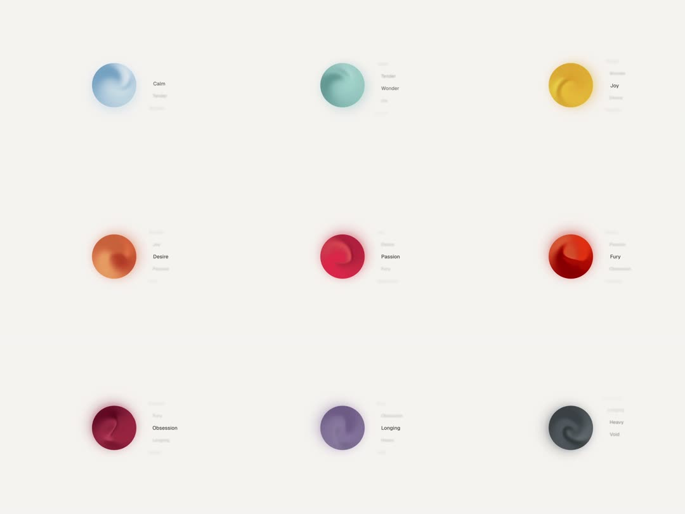

Emotion Shader: a 3x3 grid of soft gradient orbs, one per emotion (Calm, Wonder, Joy, Desire, Passion, Fury, Obsession, Longing, Heavy/Void). Each orb is a blurry multi-stop radial swirl slowly churning inside a circular mask; label + muted sub-tags beside each.
Media
Frame-by-frame

0-100%
Static grid composition; inside each orb the gradient swirl drifts and breathes (internal blobs rotate a few degrees and swell); hue stays per-emotion (ice blue, mint, gold, ember orange, crimson, blood red, wine, violet, slate).
Build prompt
Build an emotion-orb grid. Each cell: 120px circle with overflow hidden, containing 2-3 absolutely positioned radial-gradient blobs (60-80% size, blur 20px) in the emotion's palette. Animate per orb: blobs orbit the center slowly (rotate container 12-20s linear) and pulse scale 0.9-1.1 on a sine offset by index so no two orbs sync. Palette map: Calm #BFD9E8/#7FA8C9, Wonder #BFE3D8/#8FC7B8, Joy #F2C94C/#E8963C, Desire #E8834C/#C9532E, Passion #D43D5E/#9E1B32, Fury #C1121F/#6E0B14, Obsession #8E1E3F/#4A0E21, Longing #9B8EC4/#5E4E8C, Heavy #5A5E66/#2B2E33. Beside each orb: emotion name (14px medium) and 2-3 muted micro-labels (11px, 40% opacity). Whole grid on an off-white #F5F4F2 canvas.